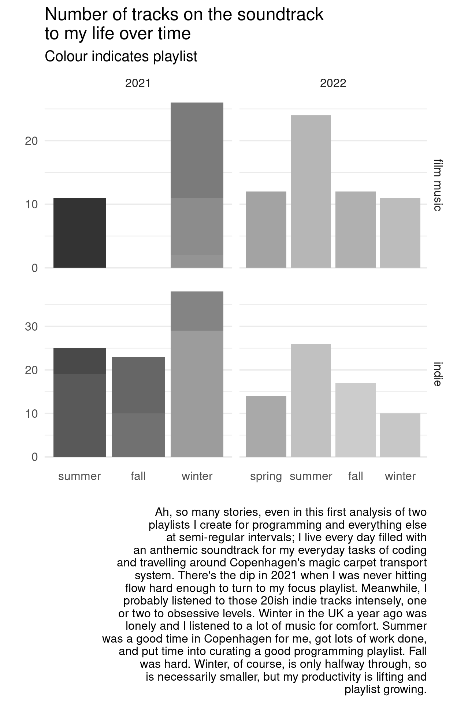

Limping through authentication just far enough to analyse number of tracks on the soundtrack to my life playlists over the last couple of years
It occurs1 to me that I now have a dataset of playlists in Spotify , and this dataset is, for a data scientist, astonishingly corrupted. If I cannot access anything else data-wise, I can do a string analysis of the names of my playlists and could blogpost on how many mistakes I made with them alone.
For twenty years, my primary income was music. I’ve variously substituted this income with roles in scientific programming over the last decade, transitioning into a fulltime career when I completed my doctorate a year ago. My outlet for the music that used to dominate my life, especially moving countries without a piano, are my Spotify playlists.
Music is a constant soundtrack to my life; I’m a High Fidelity grrl living a future-noir musical in my head, dancing on the metro around Copenhagen like no one can see.
I have two soundtrack to my life playlists for different purposes at all times, but regularly create new soundtracks to life, at the moment it is every season.
# set up playlist dataset
categories <-
tibble(
in_this_post = c('lw', 'mct'),
playlist = c(
"lifes::work",
"maybe i'll code today"
),
purpose = c(
"scientific programming, inspired",
"scientific programming when feeling unproductive or sad and travelling about Copenhagen on the magic carpet transport system"
)
)
gt(categories)| in_this_post | playlist | purpose |
|---|---|---|
| lw | lifes::work | scientific programming, inspired |
| mct | maybe i'll code today | scientific programming when feeling unproductive or sad and travelling about Copenhagen on the magic carpet transport system |
I shall begin this analysis as I begin every new type of analysis, by asking the internet how to do it.
First few hits mentioned a CRAN package spotifyr, which sounds promising, indeed.
# > (in console)
install.packages('spotifyr')Moments like these I always deeply appreciate the open source community for understanding how little skill I have for dealing with APIs; my entire education was equations on a blackboard.
Client ID and Client Secret> spotifyr::get_spotify_access_token()
Request failed [400]. Retrying in 1 seconds...
Request failed [400]. Retrying in 3.1 seconds...
Error in spotifyr::get_spotify_access_token() :
>What did I misunderstand about the instructions? I searched the site,
but this yielded lots of documentation but still no answer. So I tried
creating an app, and sure enough, yup, there’s the
Client ID.
Client ID and Client Secret# >
Sys.setenv(SPOTIFY_CLIENT_ID = 'xxxxxxxxxxxxxxxxxxxxx')
Sys.setenv(SPOTIFY_CLIENT_SECRET = 'xxxxxxxxxxxxxxxxxxxxx')I’ve made this mistake before; I find it confusing that I need to create something called an application just to give myself authentication to access data.
Now to try it; browse the package reference. get_my_playlists
is exactly where I want to start.
# >
get_my_playlists()Which redirected me to a site displaying the following text. This is disheartening.
INVALID_CLIENT: Invalid redirect URI
Did I restart R after updating the System Environment?
> library(spotifyr)
> get_my_playlists()
Waiting for authentication in browser...
This time the browser page displayed new text.
Missing required parameter: client_id
Curiouser and curiouser. Are system environments case sensitive?
First, to check that I have actually stored my system variables.
# >
Sys.getenv()Can’t see them. Will inspect file.
# >
library(usethis)
edit_r_environ() # this took me to localTime to try those console commands again.
# >
Sys.setenv(SPOTIFY_CLIENT_ID = 'xxxxxxxxxxxxxxxxxxxxx')
Sys.setenv(SPOTIFY_CLIENT_SECRET = 'xxxxxxxxxxxxxxxxxxxxx')
Sys.getenv()And, magically, they are there now. Hopefully does it. Restarting R again.
# >
library(spotifyr)
get_my_playlists()Oh ffs.
Missing required parameter: client_id
# >
Sys.getenv("SPOTIFY_CLIENT_ID")
[1] ""
I think I’ll just edit my .Renviron myself. Trying again.
# >
library(spotifyr)
get_my_playlists()Aha! I needed to see the image in this post to understand I needed to add a local host to my Spotify dev app’s settings.
Once again, learning the lesson that some things cannot be solved with R.
Now that I can access my Spotify data, let’s see what I have to work with.
I have been creating lw and mct playlists for years now. For a while I was sometimes creating a playlist by the month. Currently I have been creating playlists by the season.
I know I have divided playlists into instrumental and indie, broadly, and attempted to tag these playlists by lw and mct categories and when I instantiated the playlist.
To further define these questions, I need to find out what variables I have access to. I am assuming I can access my playlist titles, and the tracks in them.
# writing file locally so I don't have to fiddle with auth
library(spotifyr)
sp_playlists_raw <- get_my_playlists(limit = 50)
write_csv(sp_playlists_raw, 'data/spotdat.csv')sp_playlists_raw <- read_csv('../../data/spotdat.csv')
# what variables we have
skim(sp_playlists_raw)| Name | sp_playlists_raw |
| Number of rows | 47 |
| Number of columns | 20 |
| _______________________ | |
| Column type frequency: | |
| character | 14 |
| logical | 5 |
| numeric | 1 |
| ________________________ | |
| Group variables | None |
Variable type: character
| skim_variable | n_missing | complete_rate | min | max | empty | n_unique | whitespace |
|---|---|---|---|---|---|---|---|
| href | 0 | 1 | 59 | 59 | 0 | 47 | 0 |
| id | 0 | 1 | 22 | 22 | 0 | 47 | 0 |
| name | 0 | 1 | 3 | 33 | 0 | 47 | 0 |
| snapshot_id | 0 | 1 | 56 | 60 | 0 | 47 | 0 |
| type | 0 | 1 | 8 | 8 | 0 | 1 | 0 |
| uri | 0 | 1 | 39 | 39 | 0 | 47 | 0 |
| external_urls.spotify | 0 | 1 | 56 | 56 | 0 | 47 | 0 |
| owner.display_name | 0 | 1 | 7 | 9 | 0 | 3 | 0 |
| owner.href | 0 | 1 | 42 | 58 | 0 | 3 | 0 |
| owner.id | 0 | 1 | 9 | 25 | 0 | 3 | 0 |
| owner.type | 0 | 1 | 4 | 4 | 0 | 1 | 0 |
| owner.uri | 0 | 1 | 22 | 38 | 0 | 3 | 0 |
| owner.external_urls.spotify | 0 | 1 | 39 | 55 | 0 | 3 | 0 |
| tracks.href | 0 | 1 | 66 | 66 | 0 | 47 | 0 |
Variable type: logical
| skim_variable | n_missing | complete_rate | mean | count |
|---|---|---|---|---|
| collaborative | 0 | 1 | 0.11 | FAL: 42, TRU: 5 |
| description | 47 | 0 | NaN | : |
| images | 47 | 0 | NaN | : |
| primary_color | 47 | 0 | NaN | : |
| public | 0 | 1 | 0.72 | TRU: 34, FAL: 13 |
Variable type: numeric
| skim_variable | n_missing | complete_rate | mean | sd | p0 | p25 | p50 | p75 | p100 | hist |
|---|---|---|---|---|---|---|---|---|---|---|
| tracks.total | 0 | 1 | 37.17 | 63.53 | 0 | 10.5 | 15 | 27 | 323 | ▇▁▁▁▁ |
There are a number of link variables, and it will take some experimentation to figure out which to use, but that is for formatting into the labels. There are two variables that will be useful for analysis. Happily, I have 47 total playlists on Spotify, and Spotify’s API allows for a Maximum of 50.
Inspecting this, as well as running the dataset through a quick
::View, I see there are two useful variables.
playlist_var <- sp_playlists_raw %>%
select(
playlist = name,
n_tracks = tracks.total
)
playlist_var %>% head() %>% gt()| playlist | n_tracks |
|---|---|
| mtc winter 2022 | 10 |
| l::w winter 2022 | 11 |
| julehygge 2022 | 10 |
| Life is a musical | 16 |
| l::w fall-2022 | 12 |
| pentatonicisation | 8 |
I’m interested in the playlists with mtc which should be
mct, so will need to search for both, and then there’s
lw which is written as l::w. I’ve always been
well aware I’d probably end up doing an analysis on these data at some
point, yet I was unable to fix this. Let’s take a look at the
damage.
[1] "mtc winter 2022"
[2] "l::w winter 2022"
[3] "julehygge 2022"
[4] "Life is a musical"
[5] "l::w fall-2022"
[6] "pentatonicisation"
[7] "mtc-fall 2022"
[8] "mtc summer-2022"
[9] "l::w summer-2022"
[10] "Super fun happy time"
[11] "Old timey"
[12] "Blues like no one’s watching"
[13] "Eurovison faves"
[14] "2022-spring maybe i’ll code today"
[15] "Danish Indie Gems"
[16] "2022-spring l::w"
[17] "Blues dancing"
[18] "70s sugar pop"
[19] "2022-02 lifeswork"
[20] "2022-02 maybe i'll code today"
[21] "2022-01 l::w"
[22] "2021-12 l::w"
[23] "2021-12 maybe i'll code today"
[24] "2021-11 maybe i'll code today"
[25] "folk"
[26] "2021-11 mct"
[27] "2021-09 maybe I’ll code today"
[28] "2021-08 maybe I’ll code today"
[29] "2021-07 lifeswork"
[30] "2021-07 maybe i'll code today"
[31] "2021 June"
[32] "2021 may"
[33] "Film"
[34] "Indie"
[35] "electro swing"
[36] "writing"
[37] "dishbrush ballads"
[38] "Punk"
[39] "karaoke"
[40] "trip hop"
[41] "hip hoppity"
[42] "old timey"
[43] "romantic"
[44] "bop"
[45] "baroque"
[46] "yoga triphop"
[47] "yoga film" I’ll start by describing a category variable to filter the dataset.
playlist_counts <-
playlist_var %>%
mutate(
category = case_when(
str_detect(playlist, 'mtc') ~ 'mct',
str_detect(playlist, 'mct') ~ 'mct',
str_detect(playlist, 'code') ~ 'mct',
str_detect(playlist, 'l::w') ~ 'lw',
str_detect(playlist, 'lifeswork') ~ 'lw'
)) %>%
filter(
!is.na(category)
) %>% group_by(category)
gt(playlist_counts)| playlist | n_tracks |
|---|---|
| mct | |
| mtc winter 2022 | 10 |
| mtc-fall 2022 | 17 |
| mtc summer-2022 | 26 |
| 2022-spring maybe i’ll code today | 14 |
| 2022-02 maybe i'll code today | 29 |
| 2021-12 maybe i'll code today | 9 |
| 2021-11 maybe i'll code today | 10 |
| 2021-11 mct | 0 |
| 2021-09 maybe I’ll code today | 13 |
| 2021-08 maybe I’ll code today | 19 |
| 2021-07 maybe i'll code today | 6 |
| lw | |
| l::w winter 2022 | 11 |
| l::w fall-2022 | 12 |
| l::w summer-2022 | 24 |
| 2022-spring l::w | 12 |
| 2022-02 lifeswork | 2 |
| 2022-01 l::w | 9 |
| 2021-12 l::w | 15 |
| 2021-07 lifeswork | 11 |
Not sure if I have any playlists labelled with lw, but
I’ll inspect the antijoin to see if I missed anything.
[1] "julehygge 2022" "Life is a musical"
[3] "pentatonicisation" "Super fun happy time"
[5] "Old timey" "Blues like no one’s watching"
[7] "Eurovison faves" "Danish Indie Gems"
[9] "Blues dancing" "70s sugar pop"
[11] "folk" "2021 June"
[13] "2021 may" "Film"
[15] "Indie" "electro swing"
[17] "writing" "dishbrush ballads"
[19] "Punk" "karaoke"
[21] "trip hop" "hip hoppity"
[23] "old timey" "romantic"
[25] "bop" "baroque"
[27] "yoga triphop" "yoga film" Yay, looks good.
playlist_dat <-
playlist_counts %>%
# extract variables from playlist titles
mutate(year = str_extract(playlist, '\\d{4}') %>% as.integer(),
month = str_extract(playlist, '-\\d{2}\\s') %>%
str_remove('-') %>%
str_remove('\\s') %>%
as.integer(),
season = case_when(
str_detect(playlist, 'winter') ~ 'winter',
str_detect(playlist, 'summer') ~ 'summer',
str_detect(playlist, 'fall') ~ 'fall',
str_detect(playlist, 'autumn') ~ 'fall',
str_detect(playlist, 'spring') ~ 'spring'
),
# assign seasons for month-labelled playlists, using BOM
season = case_when(
is.na(month) ~ season,
month == 12 | month <= 2 ~ 'winter',
month <= 5 ~ 'spring',
month <= 8 ~ 'summer',
month <= 11 ~ 'fall'
) %>%
fct_relevel('spring', 'summer', 'fall', 'winter'),
# interesting, I just realised I've lived three countries over these datasets
country = case_when(
# no straya :(
month <= 3 & year <= 2021 ~ 'straya',
year == 2021 ~ 'uk',
year == 2022 & month < 4 ~ 'uk',
TRUE ~ 'danmark'
) %>% fct_relevel('uk')
) %>%
# remove empty playlist
filter(n_tracks > 0) %>%
# arrange categories chronologically
ungroup() %>%
mutate(
season_year = if_else(
month <= 2 & season == 'winter',
as.integer(year - 1),
year
),
season_year = if_else(is.na(season_year), year, season_year)
) %>%
arrange(category, season_year, season, month) %>%
select(-month)
# a random sample of rows
sample_n(playlist_dat, 5)# A tibble: 5 × 7
playlist n_tracks category year season country season_year
<chr> <dbl> <chr> <int> <fct> <fct> <int>
1 2022-02 lifeswork 2 lw 2022 winter uk 2021
2 mtc summer-2022 26 mct 2022 summer danmark 2022
3 2021-12 maybe i'… 9 mct 2021 winter uk 2021
4 2021-09 maybe I’… 13 mct 2021 fall uk 2021
5 2021-11 maybe i'… 10 mct 2021 fall uk 2021Alright, I think I’ve got all the variables I can engineer for the playlist dataset.
I still want to get the track data, but let’s take a look what I have.
season_dat <-
playlist_dat %>%
group_by(category, season_year, season) %>%
select(playlist, n_tracks, season, season_year) %>%
ungroup() %>%
mutate(
season = fct_relevel(season, 'spring', 'summer'),
timepoint = str_c(season_year, '-', season)
) %>%
arrange(category, season_year, season) %>%
ungroup() # perhaps storing as an object will help reduce file size
season_plot <-
season_dat %>%
rename(year = season_year) %>%
left_join(
tibble(
category = c('mct', 'lw'),
genre = c('indie', 'film music')
)
) %>%
ggplot(aes(x = season,
weight = n_tracks,
fill = playlist)
) +
geom_bar(show.legend = FALSE) +
facet_grid(genre ~ year, scales = 'free') +
theme_minimal(base_size = 15) +
scale_fill_grey() +
theme(panel.grid.major.x = element_blank()
) +
labs(
title = "Number of tracks on the soundtrack to my life over time" %>% str_wrap(35),
subtitle = "Colour indicates playlist",
x = "",
y = "",
caption = "Ah, so many stories, even in this first analysis of two playlists I create for programming and everything else at semi-regular intervals; I live every day filled with an anthemic soundtrack for my everyday tasks of coding and travelling around Copenhagen's magic carpet transport system. There's the dip in 2021 when I was never hitting flow hard enough to turn to my focus playlist. Meanwhile, I probably listened to those 20ish indie tracks intensely, one or two to obsessive levels. Winter in the UK a year ago was lonely and I listened to a lot of music for comfort. Summer was a good time in Copenhagen for me, got lots of work done, and put time into curating a good programming playlist. Fall was hard. Winter, of course, is only halfway through, so is necessarily smaller, but my productivity is lifting and playlist growing. " %>% str_wrap(60)
) season_plot
Ha, for a follow-up blog post, I guess.
Lost half the day to authentication.
Also this:
Nothing like unemployment to inspire a blog post; I was one of eight people recently laid off at a neuroscience consultancy in Copenhagen. Life just got spicy.↩︎